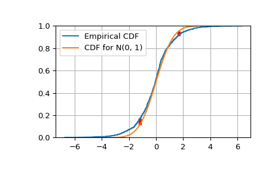

scipy.special.kolmogorov¶
-
scipy.special.kolmogorov(y) = <ufunc 'kolmogorov'>¶ Complementary cumulative distribution (Survival Function) function of Kolmogorov distribution.
Returns the complementary cumulative distribution function of Kolmogorov’s limiting distribution (
D_n*\sqrt(n)as n goes to infinity) of a two-sided test for equality between an empirical and a theoretical distribution. It is equal to the (limit as n->infinity of the) probability thatsqrt(n) * max absolute deviation > y.- Parameters
- yfloat array_like
Absolute deviation between the Empirical CDF (ECDF) and the target CDF, multiplied by sqrt(n).
- Returns
- float
The value(s) of kolmogorov(y)
See also
kolmogiThe Inverse Survival Function for the distribution
scipy.stats.kstwobignProvides the functionality as a continuous distribution
smirnov,smirnoviFunctions for the one-sided distribution
Notes
kolmogorovis used by stats.kstest in the application of the Kolmogorov-Smirnov Goodness of Fit test. For historial reasons this function is exposed in scpy.special, but the recommended way to achieve the most accurate CDF/SF/PDF/PPF/ISF computations is to use the stats.kstwobign distribution.Examples
Show the probability of a gap at least as big as 0, 0.5 and 1.0.
>>> from scipy.special import kolmogorov >>> from scipy.stats import kstwobign >>> kolmogorov([0, 0.5, 1.0]) array([ 1. , 0.96394524, 0.26999967])
Compare a sample of size 1000 drawn from a Laplace(0, 1) distribution against the target distribution, a Normal(0, 1) distribution.
>>> from scipy.stats import norm, laplace >>> n = 1000 >>> np.random.seed(seed=233423) >>> lap01 = laplace(0, 1) >>> x = np.sort(lap01.rvs(n)) >>> np.mean(x), np.std(x) (-0.083073685397609842, 1.3676426568399822)
Construct the Empirical CDF and the K-S statistic Dn.
>>> target = norm(0,1) # Normal mean 0, stddev 1 >>> cdfs = target.cdf(x) >>> ecdfs = np.arange(n+1, dtype=float)/n >>> gaps = np.column_stack([cdfs - ecdfs[:n], ecdfs[1:] - cdfs]) >>> Dn = np.max(gaps) >>> Kn = np.sqrt(n) * Dn >>> print('Dn=%f, sqrt(n)*Dn=%f' % (Dn, Kn)) Dn=0.058286, sqrt(n)*Dn=1.843153 >>> print(chr(10).join(['For a sample of size n drawn from a N(0, 1) distribution:', ... ' the approximate Kolmogorov probability that sqrt(n)*Dn>=%f is %f' % (Kn, kolmogorov(Kn)), ... ' the approximate Kolmogorov probability that sqrt(n)*Dn<=%f is %f' % (Kn, kstwobign.cdf(Kn))])) For a sample of size n drawn from a N(0, 1) distribution: the approximate Kolmogorov probability that sqrt(n)*Dn>=1.843153 is 0.002240 the approximate Kolmogorov probability that sqrt(n)*Dn<=1.843153 is 0.997760
Plot the Empirical CDF against the target N(0, 1) CDF.
>>> import matplotlib.pyplot as plt >>> plt.step(np.concatenate([[-3], x]), ecdfs, where='post', label='Empirical CDF') >>> x3 = np.linspace(-3, 3, 100) >>> plt.plot(x3, target.cdf(x3), label='CDF for N(0, 1)') >>> plt.ylim([0, 1]); plt.grid(True); plt.legend(); >>> # Add vertical lines marking Dn+ and Dn- >>> iminus, iplus = np.argmax(gaps, axis=0) >>> plt.vlines([x[iminus]], ecdfs[iminus], cdfs[iminus], color='r', linestyle='dashed', lw=4) >>> plt.vlines([x[iplus]], cdfs[iplus], ecdfs[iplus+1], color='r', linestyle='dashed', lw=4) >>> plt.show()
